arXiv 2512.17909 · cs.CV · v1 2025 年 12 月 19 日 · 预印本 · 中文精读
Both Semantics and Reconstruction Matter: Making Representation Encoders Ready for Text-to-Image Generation and Editing
作者 Shilong Zhang、He Zhang、Zhifei Zhang、Chongjian Ge、Shuchen Xue、Shaoteng Liu、Mengwei Ren、Soo Ye Kim、Yuqian Zhou、Qing Liu、Daniil Pakhomov、Kai Zhang、Zhe Lin、Ping Luo，来自香港大学、Adobe Research 和中国科学院大学。
关于这份精读。这篇论文在 arXiv 上登记的是 arXiv 非独占分发许可（arXiv.org perpetual, non-exclusive license），不是 CC 许可，版权归作者；PDF 页脚没有另外的版权声明。按站点规则这类论文本来不放原图，这一批论文由站点作者决定放原图：图 1 到图 12 从 arXiv PDF 裁切，只做了裁切和格式转换，没有改内容；每张图注写明作者、出处和许可，并给出“看原图”链接。图下文字是我写的。
这里按原文顺序覆盖正文 1 到 5 节，小节编号和原文一致，用自己的话整理，不是逐字翻译。原文多次提到“补充材料”（训练细节、自回归方向的相关工作、完整提示词），但 arXiv v1 的 PDF 只有 17 页正文和参考文献，没有补充材料，所以这部分无法覆盖。原文只给式 (1) 编号；其他式子是我按文字写出来的，标“按文字整理”。表格数字照录原文。“读者注”是整理时核算或对照发现的，不属于论文内容，页尾有汇总。
代码。没有官方代码：项目主页的 Code 按钮写着“Under Legal Review”（2026-11-16 查看），作者的 GitHub 账号下只有项目页仓库 jshilong/PS-VAE-PAGE。本页最后一节对照的是 OpenWAM 里的 S-VAE 复刻实现（OpenWAM 仓库提交 1dcaeea，2026-11-12，Apache-2.0），只读，没有运行。
现在的潜扩散模型大多在 VAE 的隐空间里生成，这个空间只为像素重建训练，语义结构弱。一个新趋势是直接拿 DINOv2、SigLIP 这类表示编码器的高维特征当生成空间（代表作 RAE）。作者发现，换到文生图和指令编辑上，这条路有两个问题：
对应两步改造：S-VAE 先冻结 DINOv2-B，在它后面加一个小的“语义 VAE”，把 768 维特征压到 96 维、带 KL 正则，只用特征重建损失训练，解决离流形；PS-VAE 再解冻编码器，加像素重建损失联合训练，同时用冻结的原编码器输出约束语义不跑偏，补上细节。
读完我认为最值得记住的三点：（1）S-VAE 本身只重建特征，像素解码器只为评估而训练、梯度被截断；“语义加像素”是 PS-VAE 的事。OpenWAM 借用的是 S-VAE 这一步，不是 PS-VAE（读者注 4）。（2）式 (1) 是精确成立的，我用数值核对到 \(10^{-14}\)（读者注 1）。（3）表 2 的文生图列取的是第 200k 步的值，图 7 图例和 §4.3 正文取的是曲线最高点，两套数混用，读数时要分清（读者注 8、读者注 9）。
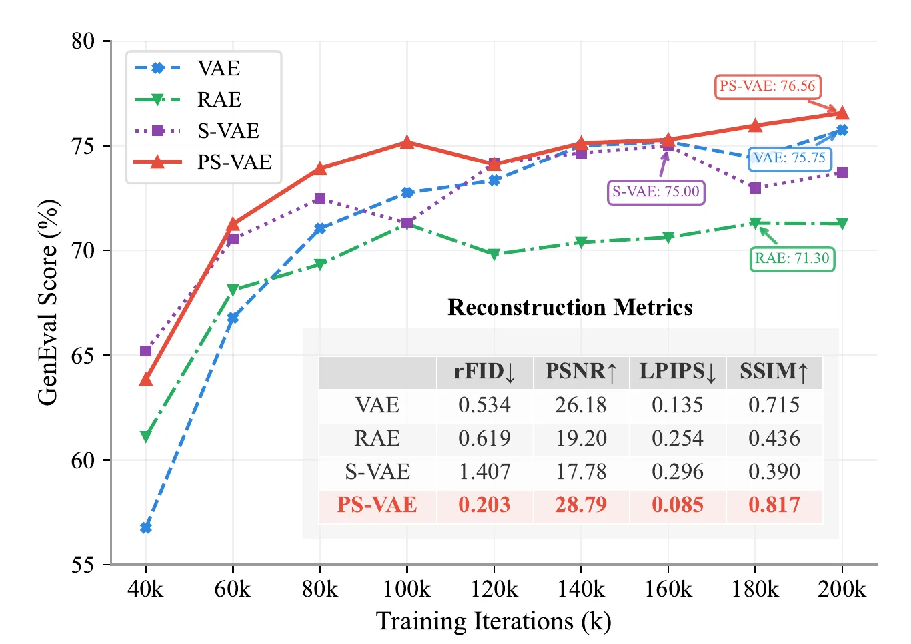
全文反复出现这几个名字，下表是我根据 §3.3、§5.1 整理的。
| 名字 | 编码器 | 隐变量 | 训练用的损失 | 像素解码器 |
|---|---|---|---|---|
| RAE（Zheng 等） | 冻结的 DINOv2-B | 16 × 16 × 768，原特征 | 只训练解码器 | 直接从 768 维特征解码 |
| S-VAE | 冻结的 DINOv2-B + 语义编码器 \(E_s\) | 16 × 16 × 96，KL 正则 | \(\mathcal L_s\)（特征 \(\ell_2\) + 余弦）+ \(\mathcal L_{KL}\) | 只为评估而训，输入是 detach 后的隐变量 |
| PS-VAE | 解冻的 DINOv2-B + \(E_s\)，从 S-VAE 继续训 | 16 × 16 × 96（也有 32 通道版） | \(\mathcal L_s\)（对照冻结原编码器）+ \(\mathcal L_{KL}\) + 像素 \(\mathcal L_P\) | 联合训练，梯度回传到编码器 |
| P-VAE（消融） | 同 PS-VAE | 16 × 16 × 96 | 只有像素损失 | 联合训练 |
| RAE-HD（消融） | 解冻的 DINOv2-B，不压缩 | 16 × 16 × 768 | 像素损失 + 语义损失 | 直接从 768 维解码 |
背景。自监督（DINO 系列、MAE、MoCo）和对比学习（CLIP、SigLIP2、Perception Encoder）训出来的表示编码器，是视觉理解的通用底座。但生成模型仍然几乎都用 VAE：它的隐变量低维、只为像素重建，没有高层语义，扩散模型只能从头学视觉概念，算力花得多。能不能把生成空间从 VAE 换成表示编码器的特征空间？
RAE 的回答和它的局限。RAE 改造 DiT 结构去处理高维特征，在类别条件 ImageNet 上效果很好。但作者把它放到文生图和指令编辑上，明显不如成熟的 VAE 基线（图 1）。
两个原因，两步改造。第一，表示特征维度高、没有紧凑正则，和它真实的信息量不匹配，扩散模型容易生成离流形的隐变量（脚注定义：落在没定义的、分布外区域、解码不可靠的特征），物体结构因而扭曲。于是提出 S-VAE：把冻结的特征映射到紧凑、KL 正则的空间。第二，表示编码器的训练目标是判别，不保留细节结构，即使在 S-VAE 空间里，生成模型也画不好细纹理和小结构。于是解冻编码器，同时用像素重建损失和“对照冻结原编码器”的语义重建损失联合优化，得到 PS-VAE。
主要数字。基于 DINOv2 的 96 通道 PS-VAE 和 MAR-VAE 比：rFID 0.534 → 0.203，PSNR 26.18 → 28.79，SSIM 0.715 → 0.817；GenEval 75.8 → 76.6，DPG-Bench 83.2 → 83.6；编辑分数 0.06 → 0.22。换成 SigLIP2（Bagel 用的编码器）也有相同趋势，而且微调后的编码器不动 LLM 也基本保住理解能力。
贡献。（1）首次指出标准表示编码器不能直接用于文生图和指令编辑，并找出两个原因；（2）先用语义自编码器把无约束特征压成紧凑隐空间，再用像素重建补细节；（3）建立一套统一流程，在文生图和编辑上公平比较不同隐空间。
理解用的表示编码器。两大路线：自监督（SimCLR、MoCo、BYOL、DINO、DINOv2、DINOv3）和图文对比（CLIP、SigLIP、Perception Encoder）。它们为判别优化，实际上是有损压缩器，丢掉理解不需要、生成却需要的高频细节；特征空间又高维、无约束，直接当扩散目标就会离流形。
生成用的 VAE。VAE 是潜扩散模型的基本部件，主要为降低高分辨率生成的算力。它主要按像素重建训练，隐空间偏低层结构。早期只按重建质量评价 VAE；近来大家意识到隐空间的拓扑性质对生成很关键，于是有 EQ-VAE、“改善可扩散性”、VA-VAE 等显式正则（常用 KL）。本文延续这条线：设计一个由高层语义直接塑形、带 KL 正则的紧凑隐空间。
统一理解和生成的特征空间。一类是让 VAE 隐变量对齐表示编码器（VA-VAE、REPA-E 方向），把编码器当软约束；另一类直接从表示编码器构造生成空间（Chen 等、AToken、UniFlow、SVG、RAE）。其中前三者不要求隐空间完整保留原语义结构；SVG 和 RAE 直接在原始高维特征上扩散，和本文最接近。自回归方向（UniTok、DualToken、TokLIP、Tar）说在补充材料里讨论，arXiv v1 没有这部分。
先分析 RAE 的重建和生成行为，从理论和实验两方面说明高维空间让扩散模型生成落在像素解码器训练支撑之外的隐变量；再说 RAE 重建差导致结构和纹理学不好、做不了精细编辑；然后给出逐步改造方案；最后给出一个深度融合（deep-fusion）架构，作为公平比较各隐空间的平台。除特别说明，设置都沿用 RAE，编码器用 DINOv2-B。
结论先说：RAE 的重建明显比 VAE 差，但文生图里的结构伪影比重建差距能解释的还要严重得多，作者把这个“多出来的差”归因于离流形。
RAE 对 VAE。对照的 VAE 是 MAR-VAE，两者都是 16 × 16 的空间压缩。重建：RAE 在人脸、文字等区域常有伪影；表 4 里 rFID 相近，但 SSIM、PSNR 低很多。这在意料之中，DINOv2 本来不为重建训练。生成（所有模型都带 RAE 的宽 DDT 头）：文生图里 RAE 收敛快（语义好），但结构和纹理伪影严重，GenEval 明显更低；编辑里 RAE 理解原图、跟随指令的能力更强（图 2b），但细节保不住。
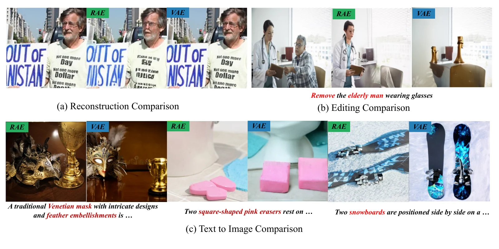
离流形的理论分析。设 \(h\) 维特征空间里藏着一个 \(l\) 维流形（\(h>l\)）。隐数据 \(z\in\mathbb R^l\)，观测 \(x=Qz\in\mathbb R^h\)，\(Q\in\mathbb R^{h\times l}\) 列正交（\(Q^\top Q=I_l\)）。前向过程 \(x_t=(1-t)x_0+t\epsilon_h\) 投影后正好是 \(z_t=Q^\top x_t=(1-t)z_0+t\epsilon_l\)，其中 \(\epsilon_l=Q^\top\epsilon_h\)。两个空间的最优速度估计是给定带噪状态时速度目标的条件期望：
把高维信号分解到流形方向和它的正交补，高维估计器可以完全用低维估计器写出来，外加一个残差项：
第一项是沿流形的生成流。它本质是低维的，但在环境空间里工作的网络得自己“发现”投影 \(Q^\top\) 和嵌入 \(Q\)，在高维空间里找到稀疏的数据子空间，这个负担在内在坐标里扩散时完全不存在。第二项是正交子空间里的纯高斯噪声，网络得学一个不带语义的近似恒等映射，浪费容量。这也解释了 RAE 的观察：模型宽度小于输入维度时，连一张图都拟合不好，因为高维高斯噪声满秩、无法无损压缩，网络得留出足够容量“传噪声”，宽度小于环境维度时就形成信息瓶颈；也解释了带长跳连的宽 DDT 头为什么对 RAE 帮助很大。
推导：\((I-QQ^\top)x_t=t\,(I-QQ^\top)\epsilon_h\)，因为 \(x_0=Qz_0\) 在正交补上的分量为零，所以速度目标的正交分量 \((I-QQ^\top)(\epsilon_h-x_0)=(I-QQ^\top)x_t/t\) 由 \(x_t\) 完全确定。流形方向的分量是 \(Q(\epsilon_l-z_0)\)；各向同性高斯的 \(Q^\top\epsilon_h\) 和 \((I-QQ^\top)\epsilon_h\) 相互独立，所以给定 \(x_t\) 和给定 \(z_t\) 的条件期望相同。两部分相加就是式 (1)。
数值核对（scratchpad/svae/scripts/checks.py）：取 \(l=2,h=8\)，500 个二维数据点，用随机列正交 \(Q\) 嵌入八维，对有限数据集直接算精确的后验速度（softmax 加权），随机抽 200 个 \((t,x_t)\)，式 (1) 两边最大绝对差 \(8.2\times10^{-15}\)。
要注意它的前提是线性嵌入。真实 DINOv2 特征的“流形”未必是线性子空间，式 (1) 是一个说明性的模型，不是对 DINOv2 的证明。另外它说的是最优估计器，离流形样本来自网络对这个最优解的近似误差，论文没有给出误差和维度的定量关系。
玩具实验。构造一个二维的“PS”字形分布，用列正交 \(Q\in\mathbb R^{8\times2}\) 线性嵌入八维。用同样的 256 通道 MLP 扩散模型，分别在二维内在数据和八维嵌入数据上训练；八维生成的样本用 \(Q^\top\) 投回二维评估（\(Q^\top Q=I_2\) 对流形上的点是无损的）。结果：八维训练收敛更慢、样本更差；按最近邻距离看，最远的 5% 样本离真实流形更远。几何相同、只是多了无约束的维度，离流形就被放大。作者结论：找到并在内在低维的同构分布上训练，是稳定扩散、消除伪影的关键。
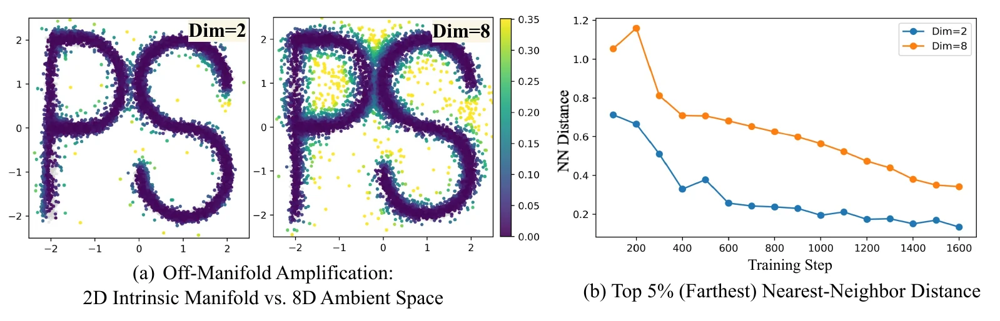
结论先说：先解决离流形（S-VAE，压缩加 KL），再补细节（PS-VAE，解冻编码器加像素损失）。第一步让生成变好但重建变差；第二步两者都变好。
输入。图像 \(I_{\rm input}\in\mathbb R^{H\times W\times3}\) 经预训练表示编码器（DINOv2-B）得到语义特征 \(f_h'\in\mathbb R^{\hat H\times\hat W\times d_h}\)，\(d_h=768\)，高维且无约束。
S-VAE。语义编码器 \(E_s\) 把 \(f_h'\) 映射到紧凑隐空间 \(f_l\in\mathbb R^{\hat H\times\hat W\times d_l}\)，\(d_l=96\ll d_h\)；语义解码器 \(D_s\) 再把它还原成 \(f_h''\)。两者用语义重建损失 \(\mathcal L_s\) 优化（特征上的 \(\ell_2\) 损失加余弦相似度损失），隐变量另加 LDM 式的 KL 损失。\(E_s\)、\(D_s\) 结构对称：三个“继承自表示编码器”的 Transformer 块，加一个调整维度的 MLP 投影层。按文字整理的目标：
\(\ell_2\) 和余弦两项的相对权重、\(\lambda_{KL}\) 的值、余弦是逐 token 还是整体计算，正文都没写（说在补充材料里，arXiv v1 没有）。为了评估 S-VAE，另训练一个像素解码器，从截断梯度的 \(f_l\).detach() 重建图像，像素损失 \(\mathcal L_P\) 沿用 LDM。扩散模型就训练在这个 96 维空间上。结果（图 4、表 4）：生成质量和指标都明显提升，重建略降。作者据此说主要瓶颈是离流形而不是重建。
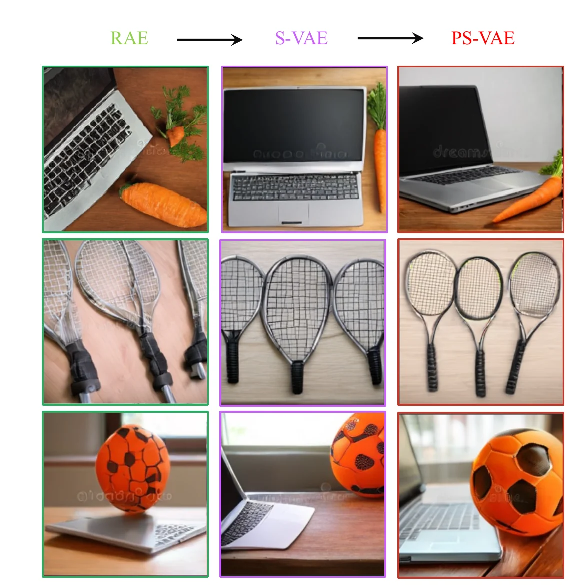
PS-VAE。要提升重建又不破坏语义结构：训练像素解码器时解冻表示编码器，去掉 \(f_l\) 上的 detach，让像素损失的梯度回传到编码器。为了保住预训练语义，\(\mathcal L_s\) 改成在 \(f_h'\)、\(f_h''\) 和冻结的原编码器输出之间计算（图 5 下方那条冻结支路），同时保留 KL 和像素损失。按文字整理：
权重 1 和 0.1 来自 §4.1。正文只说“在 \(f_h'\) 和 \(f_h''\) 上相对原编码器施加语义重建损失”，没写清是两项都算还是只算 \(f_h''\)；上式只写了 \(f_h''\)，属于我的读法。
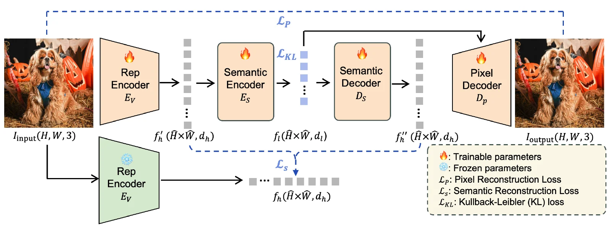
效果（图 4、表 4）：重建明显提升，语义结构基本保住；生成模型能学到细几何和纹理，语义又保证了文生图的快速收敛和编辑的指令跟随（图 7）。
编码器的输入是 224 × 224（§4.1，DINOv2 patch 14），\(224/14=16\)，得到 16 × 16 个 token；像素解码器输出 256 × 256，\(256/16=16\)。所以“16 倍空间下采样”是相对输出说的，编码器其实看的是 224 的图。表 2 里 MAR-VAE、VA-VAE 也是 16 倍、Flux-VAE 8 倍加 2 × 2 打包，到了生成模型那里 token 网格都是 16 × 16。重建指标是在 256 输出上算的，论文没说真值图是 256 的原图还是 224 放大后的图。
256 × 256 的 RGB 图有 \(256\times256\times3=196{,}608\) 个数。RAE 的隐变量是 \(16\times16\times768=196{,}608\) 个，和像素一样多，并没有压缩。PS-VAE96c 是 24,576（像素的 1/8），PS-VAE32c 8,192，MAR-VAE \(16\times16\times16=4{,}096\)，Flux-VAE \(32\times32\times16=16{,}384\)。所以 PS-VAE96c 比常见 VAE 还多 1.5 到 6 倍的数，重建好一部分来自这里；§5.2 的通道消融也说明了这一点。
§3.3 和图 5 图注都写明：S-VAE 阶段只用 \(\mathcal L_s\) 和 \(\mathcal L_{KL}\)，编码器冻结；像素解码器在截断梯度的隐变量上单独训练，“为了评估 S-VAE”。所以表 4 里 S-VAE 的 rFID 1.407、PSNR 17.78 衡量的是“冻结的 96 维语义隐变量能被解码器还原到什么程度”，S-VAE 的隐空间完全由特征重建决定。
本站 OpenWAM 页问 2 末尾一句说“原论文用‘语义加像素’的重建目标，压到 96 通道……并且要能解码回图像”，这描述的是 PS-VAE，不是 S-VAE。OpenWAM 版“只重建特征”这一点其实和原论文的 S-VAE 一致；真正的差别在维度、结构、训练数据，见最后一节。这一处我没有改 openwam.html，留给协调者。
自己画的 · 11 幕 3D 框架动画
11 幕：总览、离流形（第 2 幕）、式 (1) 当场核对（第 3 幕）、像素细节弱、S-VAE 结构、语义重建目标和截断梯度、PS-VAE 解冻、通道数和隐变量大小、在隐空间上训练文生图和编辑（含 shift 计算）、和其他隐空间对比、OpenWAM 的简化版。可以暂停、拖进度、旋转画面、切换开关。
结论先说：比较平台用 Transfusion 式的全共享块（参数省），初始化自 Qwen2.5-0.5B，再加 RAE 的宽 DDT 头。
PS-VAE 语义强、重建好，有希望当理解和生成共用的编码器，所以作者选深度融合架构做生成。先比较了三种块（图 6）：(a) LlamaFusion 冻结全部语言块，加一组结构相同的并行图像块；(b) Bagel 式，文本和图像两支都解冻；(c) Transfusion 式，文本和图像 token 共用同一套块。
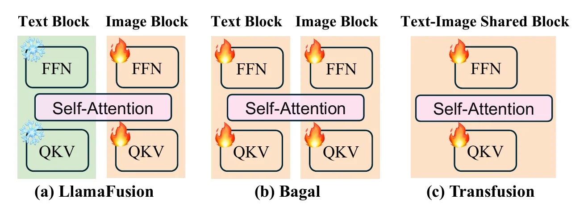
比较时用 VA-VAE（32 通道、步长 16、patch 1），融合块都从 Qwen2.5-0.5B 初始化；按 Bagel 的做法给 VAE 特征加二维位置编码、把时间步嵌入注入初始隐状态。文生图：文本嵌入拼上带噪图像隐变量，文本用因果掩码，带噪隐变量全注意力。编辑：依次拼接输入图的干净隐变量、指令文本、带噪隐变量；干净和带噪隐变量用全注意力，指令文本用因果掩码。
表 1 · 三种深度融合架构的 GenEval（照录原文；这张表用 0 到 1 的小数，表 2 起改用百分数）
| 模型 | 参数 (M) | GenEval ↑ |
|---|---|---|
| LlamaFusion | 857 | 0.524 |
| Bagel | 857 | 0.763 |
| Transfusion | 500 | 0.752 |
| Transfusion + 宽 DDT 头 | 653 | 0.762 |
LlamaFusion 明显受限，大概是冻结的语言支路适应不了文生图。Bagel 式比 Transfusion 式高 1.1 点，但参数多 71%。本文只比较各特征空间的文生图，不需要保留语言能力，所以选参数更省的 Transfusion 式。再加 RAE 的宽 DDT 头：VA-VAE 75.2 → 76.2，Flux-VAE（16 通道、步长 8、patch 2）63.7 → 68.04，MAR-VAE（16 通道、步长 16、patch 1）72.6 → 75.75，都有提升，于是定为标准组件。
\(0.763-0.752=0.011\)，即正文的 1.1 点；\(857/500-1=71.4\%\)。宽 DDT 头带来 \(653-500=153\)M 参数，收益依次是 VA-VAE +1.0、Flux-VAE +4.34、MAR-VAE +3.15，通道越少（相对 token 数）收益越大并不成立（Flux 和 MAR 都是 16 通道），论文也没这样说。Flux-VAE 的 68.04 和 MAR-VAE 的 75.75 与表 2 一致。
结论先说：重建只在 ImageNet-1K 上训；文生图在 1090 万张长描述图上训 200k 步；编辑在 120 万对上训 50k 步。所有生成都在 256 × 256。
| 任务 | 数据 | 主要设置 | 评测 |
|---|---|---|---|
| 重建 | ImageNet-1K 训练集 | 输入 224 中心裁切，patch 14 → 16 × 16；像素解码器用 LDM 结构，输出 256；batch 96，学习率 1e-4；两阶段（先冻编码器训 \(E_s,D_s\)，像素解码器在 detach 的隐变量上训；再全部解冻）；\(\mathcal L_s\) 权重 1，\(\mathcal L_p\) 权重 0.1 | ImageNet-1K 验证集 rFID、SSIM、PSNR、LPIPS |
| 文生图 | CC12M-LLaVA-NeXT（CC12M 图像配 LLaVA-NeXT 长描述），1090 万张 | 256 中心裁切；batch 约 730，学习率 1e-4，EMA 0.9999，200k 步；训练时 logit-normal 采样 \(t\) 再按特征空间平移 | GenEval（用 Bagel 改写的长提示词版本）、DPG-Bench |
| 推理 | — | 50 步 Euler，timestep shift 3，CFG 6.5 | — |
| 编辑 | OmniEdit，120 万对，7 类编辑 | 从文生图检查点继续训 50k 步，其他同文生图；报告最好的检查点 | GEdit-Bench 中对应的 8 个子任务，用 EditReward 打分 |
为什么 GenEval 和 DPG-Bench 都要。GenEval 用目标检测器判分，对结构和纹理很敏感：物体几何不准、纹理扭曲，检测器可能认不出或重复检测，即使语义上对了分数也低。DPG-Bench 用视觉语言模型当裁判，偏重高层对齐。两者互补，可以分开看“结构保真”和“语义对齐”。
按特征空间调整的时间步平移。patch 大小和通道数改变时，噪声和隐变量之间插值的信噪比会变。为了让各空间的信噪比加权一致，训练时用平移后的时间步（按文字整理，原文在正文里内联写出，没有编号）：
序列长度在各空间相同，所以 \(s\) 只取决于通道数和 patch 大小。Flux（\(C=16,P=2\)）得 2，DINOv2-B（\(C=768,P=1\)）约 6.93。消融确认这两个值合理：Flux 用 2 比 1、3 好；RAE 用 6.93 比 6、8 好。所有特征空间和通道消融都用这条规则。
按上式（原文的根号排版在 pdftotext 里断开了，我按两个例子反推出根号下是 \(C P^2/(C_{\rm base}P_{\rm base}^2)\)，两个例子都对得上）：Flux \(\sqrt{16\cdot4/16}=2\)；DINOv2-B \(\sqrt{768/16}=\sqrt{48}=6.928\)；PS-VAE96c \(\sqrt{6}=2.449\)；PS-VAE32c 和 VA-VAE \(\sqrt2=1.414\)；MAR-VAE 1。注意这只是训练时的平移；推理统一用 shift 3，没有按空间调整，论文没解释这个不对称。
文生图：\(730\times200{,}000=1.46\times10^8\) 个样本，除以 1090 万张约 13.4 个 epoch。编辑：\(730\times50{,}000/1.2\times10^6\approx30\) 个 epoch。重建：batch 96 时 ImageNet-1K 一个 epoch 约 13,345 步，但论文没给两个阶段各训多少步，所以总量不知道（“未核实”，可能在缺失的补充材料里）。
结论先说：PS-VAE96c 重建在所有 16 倍空间里最好（只输给 8 倍的 Flux-VAE），GenEval 第一；PS-VAE32c 在 DPG-Bench 和编辑上第一。两者都远超同预算的 RAE，收敛也更快。
表 2 · 重建和生成对比（照录原文。Flux-VAE 步长 8，作参考；其余步长 16。原文加粗最好、下划线次好，这里用 ★ 标最好）
| 方法 | rFID ↓ | PSNR ↑ | LPIPS ↓ | SSIM ↑ | GenEval ↑ | DPG-Bench ↑ | Editing Reward ↑ |
|---|---|---|---|---|---|---|---|
| Flux-VAE | 0.175 | 32.86 | 0.044 | 0.912 | 68.04 | 78.98 | −0.271 |
| MAR-VAE | 0.534 | 26.18 | 0.135 | 0.715 | 75.75 | 83.19 | 0.056 |
| VAVAE | 0.279 | 27.71 | 0.097 | 0.779 | 76.16 | 82.45 | 0.227 |
| RAE | 0.619 | 19.20 | 0.254 | 0.436 | 71.27 | 81.72 | 0.059 |
| PS-VAE32c | 0.584 | 24.53 | 0.168 | 0.662 | 76.22 | 84.25 ★ | 0.274 ★ |
| PS-VAE96c | 0.203 ★ | 28.79 ★ | 0.085 ★ | 0.817 ★ | 76.56 ★ | 83.62 | 0.222 |
（★ 是在步长 16 的五行里比；Flux-VAE 的重建四项其实都更好。）
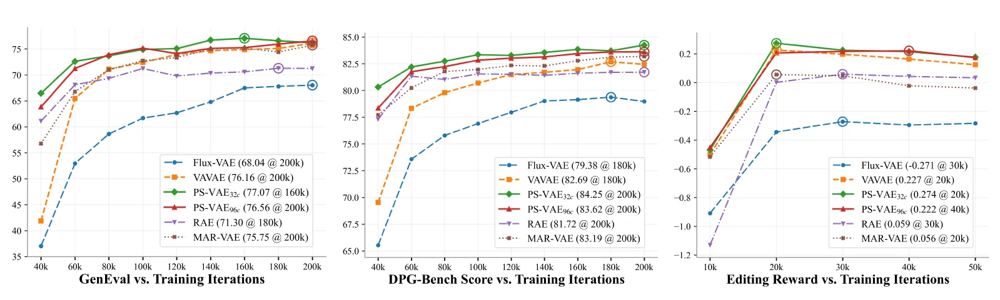
图 7 图例写的是每条曲线的最高点，表 2 的文生图两列和它对不上的几处：
凡是图例最高点在 200k 的，表和图例都相同（如 PS-VAE96c 76.56、83.62）。所以我推断表 2 的文生图列取的是第 200k 步的值；编辑列六个数和图例完全一样（最高点在 20k 到 40k），对应 §4.1 说的“报告最好的检查点”。这是我的推断，论文没明说。按 200k 算的话，PS-VAE32c GenEval 低于 96c；按最高点算则 32c 更高（77.07 对 76.56）。
引言的对比数字都能在表 2 里找到：rFID 0.534 → 0.203、PSNR 26.18 → 28.79、SSIM 0.715 → 0.817，GenEval 75.75 → 76.56（引言写 75.8 → 76.6），DPG 83.19 → 83.62，编辑 0.056 → 0.222。
编辑。只按像素重建训练的 VAE（MAR-VAE、Flux-VAE）指令跟随明显弱于有语义结构的空间（两个 PS-VAE、VA-VAE）。作者的假设：指令编辑包含“理解输入隐变量”和“按提示生成”两个子任务，语义有序的隐空间帮助前者。Bagel 发现注入 SigLIP2 特征能提升编辑，也是同一道理。去掉语义损失（P-VAE）后编辑分数从 0.22 掉到 0.04（表 4）。RAE 则受重建所累，编辑后细节和原图不一致；PS-VAE 保留了 RAE 的指令跟随，同时在人脸等细节上和原图一致（图 8）。
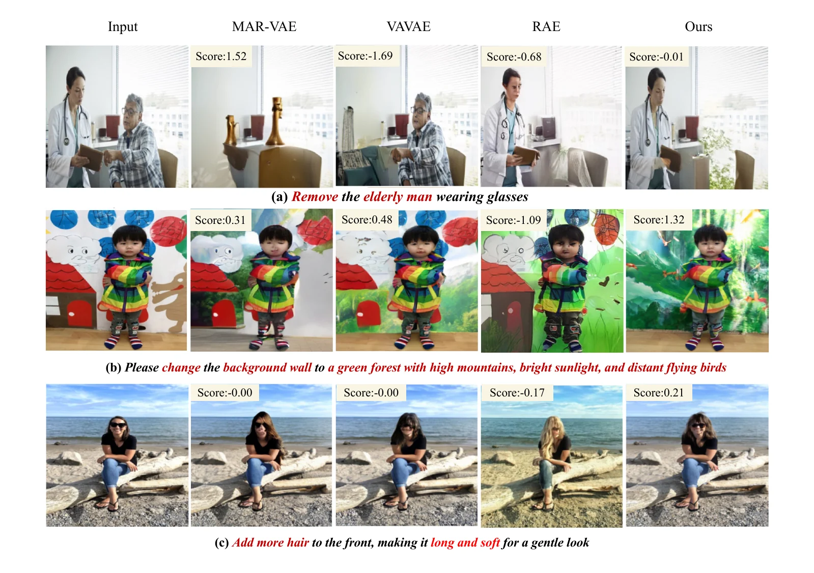
结论先说：生成模型从 0.5B 换到 1.5B，96 通道全面变好，32 通道几乎不涨甚至变差；通道多的空间上限更高。
PS-VAE96c 重建更好，但生成指标略逊于 32c，作者怀疑是模型容量不够、建模过多细节。于是固定训练设置，把骨干从 Qwen-0.5B 换成 Qwen-1.5B（图 10，653M 对 1708M）。96c：GenEval 76.56 → 78.14，DPG-Bench 83.62 → 84.09，编辑 0.222 → 0.285。32c：GenEval 77.07 → 77.67，DPG-Bench 84.25 → 84.10，编辑 0.274 → 0.228。
最后用 Qwen-3B 配 PS-VAE96c 训了 600k 步：200k 步同上设置，再 400k 步用内部高质量数据。只在 256 × 256 上训练，文字渲染、人像、复杂概念组合都不错（图 9）。
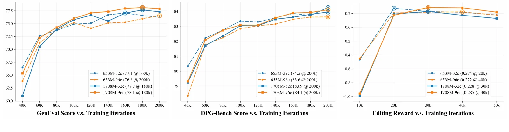
结论先说：同一套方法用在 SigLIP2-so400m/14 上，重建和生成和 DINOv2 版相当；接回 Bagel 不动 LLM，理解指标只轻微下降。
用 Bagel 的 SigLIP2-so400m/14 编码器，设置和 DINOv2 完全相同，只把语义损失 \(\mathcal L_s\) 和像素损失 \(\mathcal L_p\) 的权重比从 0.1:1 改成 0.05:1。原因是同样权重下 SigLIP2 的重建更早饱和，可能因为它的表示更高层、更抽象。
表 3 · DINOv2 和 SigLIP2 的对比（照录原文）
| 方法 | rFID ↓ | PSNR ↑ | LPIPS ↓ | SSIM ↑ | GenEval ↑ | DPG-Bench ↑ | Editing Reward ↑ |
|---|---|---|---|---|---|---|---|
| PS-VAE96c（DINOv2-B） | 0.203 | 28.79 | 0.085 | 0.817 | 76.56 | 83.62 | 0.222 |
| PS-VAE96c（SigLIP2-so400m/14） | 0.222 | 28.14 | 0.096 | 0.795 | 77.14 | 83.33 | 0.183 |
理解能力。把微调后的编码器换进原版 Bagel，LLM 参数冻结，零样本测：MME-P 从 1685 降到 1652，“VBench”从 85.0 降到 84.7。作者认为 PS-VAE 保住了 SigLIP2 的核心语义能力，并推测和 LLM 联合训练还能超过原基线（留作以后工作）。
权重比。§4.1 说 \(\mathcal L_s\) 权重 1、\(\mathcal L_p\) 权重 0.1，即 \(\mathcal L_s:\mathcal L_p=1:0.1\)。§4.4 却说“\(\mathcal L_s\) 和 \(\mathcal L_p\) 的权重比从 0.1:1 调到 0.05:1”，按字面是 \(\mathcal L_s\) 0.1、\(\mathcal L_p\) 1，和 §4.1 正好相反。按 §4.4 的字面读法，调整是把语义权重相对像素再减半，正好对应“SigLIP2 重建更早饱和、需要更强调像素”，自身说得通；那就是 §4.1 把两个权重写反了。如果 §4.1 是对的，§4.4 的意思应是 \(\mathcal L_p:\mathcal L_s\) 从 0.1 降到 0.05，即更弱的像素项，这和它给的理由相反。所以我倾向于 §4.1 写反了，但无法确定，标“未核实”。
VBench。正文写“VBench (Liu et al., 2024b)”，参考文献里的 Liu 2024b 是 MMBench（ECCV 2024），而 VBench 是视频生成评测，不是理解基准。我认为应是 MMBench。MME-P 的降幅 \(1652/1685-1=-1.96\%\)。
结论先说：压缩加 KL（RAE → S-VAE）让生成和编辑变好、重建变差；加像素细节（→ PS-VAE）两者都好；去掉语义（P-VAE）重建最好，但语义和编辑垮掉。
表 4 · 从 RAE 演进到 PS-VAE（照录原文；Linear Probe 原文没定义，大概是 ImageNet top-1 / top-5，未核实）
| 方法 | rFID ↓ | PSNR ↑ | LPIPS ↓ | SSIM ↑ | Linear Probe ↑ | GenEval ↑ | DPG ↑ | Editing Reward ↑ |
|---|---|---|---|---|---|---|---|---|
| MAR-VAE | 0.534 | 26.18 | 0.135 | 0.715 | 5.4/15.1 | 75.7 | 83.2 | 0.06 |
| RAE | 0.619 | 19.20 | 0.254 | 0.436 | 83.0/96.6 | 71.3 | 81.7 | 0.06 |
| S-VAE | 1.407 | 17.78 | 0.296 | 0.390 | 81.1/95.7 | 73.7 | 83.6 | 0.12 |
| P-VAE | 0.398 | 29.81 | 0.073 | 0.850 | 11.8/26.7 | 75.2 | 82.1 | 0.04 |
| PS-VAE | 0.203 | 28.79 | 0.085 | 0.817 | 79.5/94.8 | 76.6 | 83.6 | 0.22 |
RAE → S-VAE。S-VAE 主要靠 \(\mathcal L_s\) 和 \(\mathcal L_{KL}\) 压缩、正则特征空间。生成和编辑大幅提升（GenEval 71.3 → 73.7，DPG 81.7 → 83.6，编辑 0.06 → 0.12），重建反而明显变差（PSNR 19.2 → 17.78，SSIM 0.436 → 0.390）。说明 RAE 的主要限制不是重建，而是高维特征的离流形，S-VAE 有效缓解了它。和 MAR-VAE 比：S-VAE 像素重建差，但语义强，偏语义的 DPG-Bench 和编辑都更好；GenEval 更差，因为检测器对纹理和结构敏感，S-VAE 的像素保真度不够。这说明准确重建对学细节是必要的。
PS-VAE。加入细节监督、同时保持语义结构，恢复高频细节而不丢语义一致性。96 通道 PS-VAE 重建最好，GenEval 超过 MAR-VAE 0.9，DPG-Bench 保持 S-VAE 的水平；编辑分数几乎翻倍（0.12 → 0.22）。
语义结构的作用（P-VAE）。只用像素损失训练，线性探测退回 MAR-VAE 的水平；DPG 下降（正文写 83.6 → 82.6），编辑分数骤降（0.22 → 0.04）。说明隐空间里显式的语义正则对文本对齐和指令跟随不可缺。
图 1 右侧标注 S-VAE 75.00，表 4 和 §5.1 都是 73.7，差 1.3 点。图 1 的 RAE 标 71.30，正好是图 7 图例里 RAE 的最高点（71.30 @ 180k），而表 4 的 RAE 71.3 也可以是 200k 的 71.27 四舍五入。所以一个可能的解释是：图 1 标的是曲线最高点，表 4 取 200k 的值，S-VAE 在训练中途到过 75.00、最后掉到 73.7。图 1 里紫色曲线确实在 100k 到 140k 之间高过后段。这是我的推断，论文没有给出 S-VAE 的逐步数值。
§5.1 正文写 P-VAE 的 DPG“83.6 → 82.6”，表 4 是 82.1。差 0.5，不是四舍五入能解释的。其他正文数字都能对上：GenEval \(76.6-75.7=0.9\)（表 2 精度下是 \(76.56-75.75=0.81\)），编辑 \(0.22/0.12=1.83\) 倍（“几乎翻倍”）。
结论先说：重建到 112 通道饱和；生成 32 到 96 通道差不多，112 时 DPG-Bench 掉约 0.6 点。作者认为在这个设置下，同时保住语义和像素细节需要的内在维度约 96。
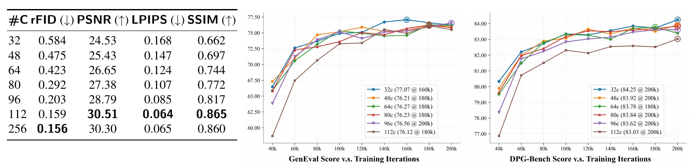
图 11 左表 · 通道数和重建（照录原文）
| 通道 | rFID ↓ | PSNR ↑ | LPIPS ↓ | SSIM ↑ |
|---|---|---|---|---|
| 32 | 0.584 | 24.53 | 0.168 | 0.662 |
| 48 | 0.475 | 25.43 | 0.147 | 0.697 |
| 64 | 0.423 | 26.65 | 0.124 | 0.744 |
| 80 | 0.292 | 27.38 | 0.107 | 0.772 |
| 96 | 0.203 | 28.79 | 0.085 | 0.817 |
| 112 | 0.159 | 30.51 | 0.064 | 0.865 |
| 256 | 0.156 | 30.30 | 0.065 | 0.860 |
通道越多收敛越慢；32 到 96 的最终表现相近；112 是转折点，DPG-Bench 明显下降约 0.6。再加通道主要是多编码高频细节，占用模型容量，可能妨碍语义对齐。
112 到 256 通道重建基本不变（rFID 0.159 → 0.156，PSNR 30.51 → 30.30 反而略降），所以“112 饱和”成立。DPG-Bench 的下降：\(83.62-83.03=0.59\)，即“约 0.6”。但 32 到 96 的 DPG 其实一路略降（84.25、83.92、83.78、83.84、83.62），96 并不是 DPG 的最优点；选 96 是在重建和生成之间折中，加上 §4.3 大模型下 96 更有上限。另外 48 通道的 PS-VAE 重建 PSNR 25.43，这个数常被拿来对照 OpenWAM 的 48 维，但那是 PS-VAE（有像素损失、DINOv2、ImageNet），不能直接套用到 OpenWAM 的 S-VAE。
结论先说：语义编解码器不能太浅：两层 MLP 会让线性探测大跌、生成变差；像素解码器接在语义解码器后面会重建更好、GenEval 变差。
表 5 · PS-VAE 的结构变体（照录原文。2L-MLP S-VAE：语义编码器和解码器都换成两层 MLP；DPixel on DSemantic：最后阶段把像素解码器接到语义解码器的输出特征上）
| 方法 | rFID ↓ | PSNR ↑ | LPIPS ↓ | SSIM ↑ | Linear ↑ | GenEval ↑ | DPG-Bench ↑ |
|---|---|---|---|---|---|---|---|
| PS-VAE | 0.214 | 28.63 | 0.087 | 0.813 | 79.5 / 94.8 | 76.6 | 83.6 |
| 2L-MLP S-VAE | 0.205 | 28.94 | 0.082 | 0.812 | 44.5 / 64.5 | 70.3 | 83.1 |
| DPixel on DSemantic | 0.193 | 29.64 | 0.077 | 0.840 | 80.4 / 95.4 | 74.4 | 83.6 |
把无约束的表示空间投影成紧凑、KL 正则的流形需要不小的计算量。两层 MLP 不足以在 96 通道里保住丰富语义，线性探测掉到 44.5/64.5；作者解释为映射容量不够，有效内在维度低于 96，在 KL 约束下进一步引起后验坍缩，最终拖累生成。把语义解码器重建的特征直接送进像素解码器（结构对称）能提升重建，但 GenEval 下降；作者猜是两种重建目标经同一条 Transformer 通路回传，梯度互相干扰，也可能需要重新平衡损失权重，留待以后研究。
表 5 的 PS-VAE 重建是 0.214 / 28.63 / 0.087 / 0.813，表 2、表 4 是 0.203 / 28.79 / 0.085 / 0.817；GenEval、DPG、线性探测三列又和表 4 一样。可能是不同检查点或不同次训练，论文没说。另外 2L-MLP 的重建四项里有三项（rFID、PSNR、LPIPS）比表 5 的 PS-VAE 还好，只有 SSIM 低 0.001，所以“MLP 太浅”的证据全在线性探测和 GenEval 上，不在重建。
结论先说：不压缩、直接在 768 维特征上加像素损失（RAE-HD），重建大好、生成大坏，因为网络会走“捷径”，只靠少数通道重建。
另一种思路：保留 768 维空间，冻结的 DINOv2 提供语义损失，像素解码器直接在高维特征上训练。重建很快变好，生成却明显变差，生成图有严重的结构伪影和不连贯纹理（图 12a）。作者归因于高维空间难以约束：即使有语义保持损失，模型也能只靠稀疏的一部分通道重建像素，而这在高维空间里几乎不改变特征距离（高维下距离度量本来就不太灵敏）。验证方法：挑出微调后和冻结 DINOv2 偏差最大的 32 个通道（768 个中），只用它们重新训练像素解码器，重建依然很好（图 12b）。所以要把细节补充限制在紧凑、语义正则的隐空间里，这正是 PS-VAE 的核心设计。
表 6 · 在高维空间补细节导致捷径重建（照录原文）
| 方法 | rFID ↓ | PSNR ↑ | LPIPS ↓ | SSIM ↑ | GenEval ↑ |
|---|---|---|---|---|---|
| RAE | 0.619 | 19.20 | 0.254 | 0.436 | 71.3 |
| RAE-HD | 0.193 | 33.10 | 0.048 | 0.916 | 60.2 |
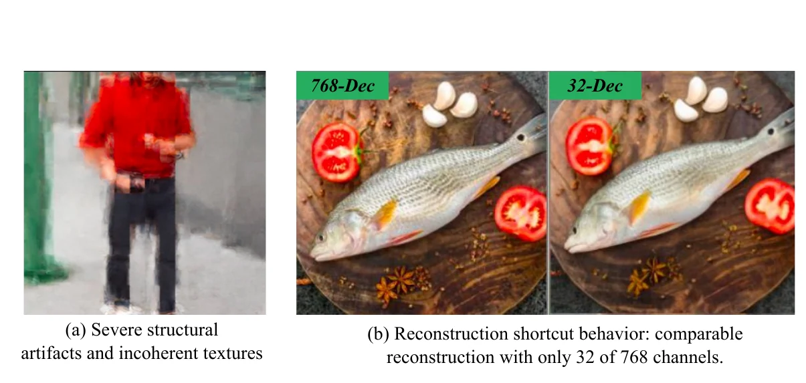
RAE-HD 的 PSNR 33.10 甚至高过 Flux-VAE（32.86），GenEval 却从 71.3 掉到 60.2。
强大的表示编码器判别能力虽强，但特征分布无约束、图像重建保真度不足，不能直接当生成空间。离流形生成和重建差是限制文生图和指令编辑的两个瓶颈。PS-VAE 在像素和语义两种重建目标下微调预训练表示编码器，把表示特征和像素细节一起映射到紧凑、KL 正则的隐空间，在重建、生成、编辑上都达到最好水平，为用一个编码器统一视觉理解和生成提供了一条可行的路。
正文有三处明确指向补充材料：重建训练的进一步细节（§4.1）、自回归方向的相关工作（§2）、图 9 的完整提示词。KL 权重、像素损失细节等正文没给的超参数，很可能也在补充材料里。我在 arXiv v1（17 页）、arXiv HTML 版和项目主页都没有找到补充材料，所以这部分没有覆盖。下面列出因此“未核实”的设置：
结论先说：OpenWAM 用的是 S-VAE 这一步的思路（冻结编码器、只重建特征、KL 正则），没有 PS-VAE 的像素解码和编码器微调；输入是视频编码器的特征，压到 48 维，在 WAM 自己的训练集上训练。没有使用本文的任何检查点（本文也没有公开权重）。
在 OpenWAM 的 §4.1.2“视觉表示先验”实验里，冻结的 DINOv3（ViT-B，768 维）或 V-JEPA 2.1（代码是 ViT-g，1408 维）先把 9 帧视频编码、时间平均成 3 个隐帧的 24 × 20 网格，再由冻结的 S-VAE 编码器取后验均值 \(\mu\) 压到 48 维，过一个按 token 的 LayerNorm（仿射参数保持初值且冻结），然后按 1 × 2 × 2 打包成 192 维 token 送进随机初始化的 Wan2.2-TI2V-5B 结构的 DiT。S-VAE 解码器只在训练 S-VAE 时用，不在 WAM 的主路径上。形状逐步走法见 OpenWAM 页问 2，训练数据见 OpenWAM 读者注 23，这里不再重抄。加 S-VAE 后两个表示式编码器的 RoboTwin 成功率从 76.42、80.91 升到 90.18、88.46。
原论文和 OpenWAM 实现逐项对照（OpenWAM 代码：openwam/model/video_backbone/encoder/svae/model.py、reducer.py，scripts/svae_train/train_svae.py，configs/model/video_backbone/encoder/svae/train.yaml，提交 1dcaeea）
| 项目 | 原论文 S-VAE（第一阶段） | 原论文 PS-VAE（最终） | OpenWAM 的 S-VAE |
|---|---|---|---|
| 输入特征 | DINOv2-B，16 × 16 × 768，单张图 | 同左，编码器解冻 | DINOv3 768 维或 V-JEPA 2.1 1408 维，形状 \((B,D,3,24,20)\)，先按数据集统计逐通道标准化 |
| 隐变量通道 | 96 | 96（另有 32） | 48（“和 Wan VAE z_dim 一致”，train.yaml 注释） |
| 压缩比 | 768 / 96 = 8 | 8 | 768 / 48 = 16 或 1408 / 48 ≈ 29.3 |
| 结构 | 编解码器对称：3 个“继承自表示编码器”的 Transformer 块 + MLP 投影 | 同左，另有 LDM 结构的像素解码器 | 3 个 pre-LN TransformerEncoderLayer（宽 \(D\)、16 头、FFN 2048、GELU、无 dropout）→ LayerNorm → Linear(D, 96) 拆成 \(\mu\)、\(\log\sigma^2\)；解码 Linear(48, D) → 3 块 → LayerNorm；随机初始化；注意力在每个隐帧的 480 个 token 内 |
| 目标函数 | \(\ell_2\) + 余弦 + KL，权重未给 | \(1\cdot\mathcal L_s+0.1\cdot\mathcal L_P\) + KL | \(\text{MSE}+1\cdot(1-\cos)+\beta\,\text{KL}\)，\(\beta=10^{-4}\)，前 20% 步线性升起；全在标准化空间里算；余弦逐 token |
| 像素解码 | 有，只为评估，输入 detach | 有，联合训练 | 没有 |
| 编码器是否微调 | 冻结 | 解冻 | 冻结（离线收集特征） |
| 训练数据 | ImageNet-1K | ImageNet-1K | WAM 自己的训练集（例如 RoboTwin），见 OpenWAM 读者注 23 |
| 优化 | batch 96，学习率 1e-4 | 同左 | AdamW，学习率 1e-4，betas (0.9, 0.99)，权重衰减 1e-4，batch 8 个片段，50 轮，1 轮线性预热后余弦衰减到 0.9 倍，梯度裁剪 1.0，bf16 |
| 下游用法 | 扩散模型在 96 维空间生成，再经像素解码器出图 | 同左 | 只取 \(\mu\) 当 DiT 的预测目标，之后不解码 |
按 model.py 的结构算（每块注意力 \(4D^2+4D\)，FFN \(2\cdot D\cdot2048+2048+D\)，两个 LayerNorm \(4D\)）：\(D=768\) 时编码器 16.62M、解码器 16.58M，合计 33.2M；\(D=1408\) 时合计 82.5M（checks.py）。这和 OpenWAM 页的估算（33M、82M）一致。但 train_svae.py 文件头注释说“The S-VAE is small (a few M params)”，和实际的 33M 到 82M 不符。作为对照，如果原论文的块就是 DINOv2-B 的块（宽 768、FFN 3072），3 + 3 块加投影约 42.8M，这是我的估算。
另一处注释过时：reducer.py 说“currently only VJEPA21VideoEncoder does”（只有 V-JEPA 2.1 接了 S-VAE），但 dinov3.py 第 131 到 145 行也接了，这和 OpenWAM 图 7 有“DINOv3 加 S-VAE”一行一致。
原论文 §5.2 的通道消融是 PS-VAE（有像素损失）在 DINOv2-B 上做的，结论“约 96 通道”针对“同时保住语义和像素细节”。OpenWAM 只要求重建特征，压缩对象是 1408 维的视频特征，目标是给 DiT 一个紧凑的预测空间，这两个最优维度没有理由相同。OpenWAM 选 48 是为了和 Wan2.2-VAE 对齐，让 DiT 的 patch 嵌入和输出头形状不变（4C = 192），论文和代码都没有做 48 以外的通道消融。所以“OpenWAM 的 48 维是原论文推荐值的一半”这种说法没有依据，两者不在同一个问题上。
论文没写、我也没找到的：补充材料里的全部超参数（见上一节）；图 3 玩具实验的具体数值；S-VAE 的逐步 GenEval 曲线。
文中提到的数据集、基准和模型。除了标注的以外，链接在 2026 年 11 月 16 日用脚本核对都返回 200。
| 名称 | 是什么 | 主页 | 论文 |
|---|---|---|---|
| PS-VAE | 本文 | 项目页（代码“审核中”） | 2512.17909 |
| ImageNet-1K | 重建训练和评测（脚本访问超时，未拿到 200） | image-net.org | 1409.0575 |
| CC12M | 文生图训练图像 | github.com/google-research-datasets/conceptual-12m | 2102.08981 |
| CC12M-LLaVA-NeXT | CC12M 的长描述版本 | Hugging Face | – |
| GenEval | 文生图评测，检测器判分 | github.com/djghosh13/geneval | 2310.11513 |
| DPG-Bench | 文生图评测，VLM 判分（出自 ELLA） | ELLA 代码 | 2403.05135 |
| OmniEdit | 编辑训练数据，120 万对 | 代码 | 2411.07199 |
| GEdit-Bench | 编辑评测（出自 Step1X-Edit） | github.com/stepfun-ai/Step1X-Edit | 2504.17761 |
| EditReward | 编辑打分模型 | 代码 | 2509.26346 |
| MME | 多模态理解评测 | GitHub | 2306.13394 |
| MMBench | 多模态理解评测（正文写作“VBench”） | github.com/open-compass/MMBench | 2307.06281 |
| RoboTwin 2.0 | OpenWAM 训练 S-VAE 和评测用的仿真基准 | robotwin-platform.github.io | 2506.18088 |
| RAE | 表示自编码器，本文的出发点 | 代码 | 2510.11690 |
| DINOv2 | 主实验的表示编码器（ViT-B） | 代码 | 2304.07193 |
| SigLIP2 | §4.4 的编码器（so400m/14） | Hugging Face | 2502.14786 |
| MAR-VAE | 16 通道 VAE 基线（MAR 论文） | 代码 | 2406.11838 |
| VA-VAE | 对齐 DINOv2 的 32 通道 VAE（LightningDiT） | 代码 | 2501.01423 |
| Flux-VAE | 8 倍下采样 VAE | 代码 | – |
| DDT | 宽 DDT 头的出处 | 代码 | 2504.05741 |
| Bagel | 深度融合架构之一，也是 §4.4 的理解基线 | 代码 | 2505.14683 |
| Transfusion | 本文采用的共享块架构 | – | 2408.11039 |
| LMFusion（LlamaFusion） | 冻结语言块的架构 | – | 2412.15188 |
| SVG | 另一个直接在表示特征上扩散的方法 | – | 2510.15301 |
| OpenWAM | 本站精读，用了 S-VAE | 本站页面 | 2609.07398 |